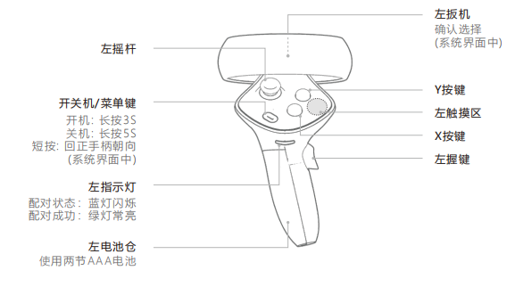
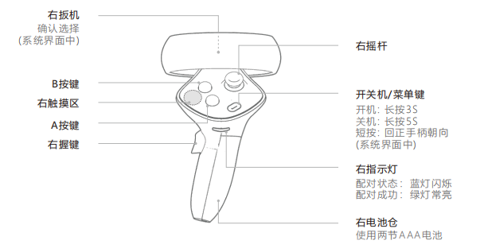

手柄按键/振动
此章节主要介绍手柄相关的功能，包括按键，振动（触觉）等。
1. 手柄按键映射
RhinoX Pro设备的主要交互输入是通过手柄跟踪以及头显与手柄上的按键来实现的，这里我们主要说明这些按键与Unity XR中键值的对应 关系，以及基本使用方法。
手柄按键示意图：
 
下表为按键与Unity键值对应关系
按键 |
Unity键值 |
|---|---|
扳机键 |
CommonUsages.triggerButton，表示扳机键是否按下 CommonUsages.trigger ，表示扳机键被按下的程度 |
抓握键 |
CommonUsages.gripButton，表示抓握键是否按下 CommonUsages.grip，表示抓握键按下的程度 |
摇杆 |
CommonUsages.primary2DAxisClick，表示摇杆是否按下 CommonUsages.primary2DAxis，表示摇杆上下左右移动的方向 |
菜单键 |
CommonUsages.menuButton，表示菜单键是否按下 |
A/X |
CommonUsages.primaryButton，表示A/X 键是否按下 |
B/Y |
CommonUsages.secondaryButton，表示B/Y键是否按下 |
下面是部分代码调用示例，也可以点击 按键振动使用示例教程 下载示例进行学习，详细使用方法请参考 Unity XR Input ：
//先列出所有输入设备，根据XR节点获取输入设备，必须先获取到输入设备，才能获取对应输入设备的输入键值
var controllerlist = new List<InputDevice>();
InputDevices.GetDevicesAtXRNode(XRNode.RightHand, controllerlist);
bool triggerValue;
//定义一个GameObject变量，通过其显隐状态测试键值获取是否生效
public GameObject ButtonTest;
if (controllerlist.Count == 1)
{
//当右手设备数量为1时，定义一个输入设备为rightcontroller
InputDevice rightcontroller = controllerlist[0];
//根据上面获取到的设备访问设备的输入键值，这里以右手柄的Trigger键为例，当按键按下时隐藏或者显示ButtonTest物体（可以是一个Cube）
if (rightcontroller.TryGetFeatureValue(CommonUsages.triggerButton, out triggerValue) && triggerValue)
{
ButtonTest.SetActive(!ButtonTest.activeInHierarchy);
}
}
2.手柄振动/触觉
手柄除了有按键输入功能外，还有马达提供振动的功能，主要用于实现应用场景中的触觉反馈。
您可以将触觉事件发送到 InputDevice。触觉呈脉冲形式，具有振幅和持续时间。
以下示例获取右手的输入设备，检查设备是否具有触觉功能，然后在有触觉功能的情况下再现脉冲。在已知具有触觉功能的前提下 可以去掉检测语句。
可以将以下方法挂载在触发事件下面（如Hover Event，Button点击事件），即可实现事件触发手柄振动。
public void TouchHaptic()
{
//先获取输入设备，此处输入设备为右手柄
var controllerlist = new List<InputDevice>();
InputDevices.GetDevicesAtXRNode(XRNode.RightHand, controllerlist);
HapticCapabilities capabilities;
if (controllerlist.Count == 1)
{
InputDevice rightcontroller = controllerlist[0];
if (rightcontroller.TryGetHapticCapabilities(out capabilities))
{
if (capabilities.supportsImpulse)
{
//设置振动幅度为0.5，振动时长为0.5秒
uint channel = 0;
float amplitude = 0.5f;
float duration = 0.5f;
rightcontroller.SendHapticImpulse(channel, amplitude, duration);
}
}
}
}
若想获取更多输入方式，可以访问 UnityXR官方文档
Note
Unity XR有新（Input System Package）旧（Input Manager）两种输入系统。
文档中的手柄按键获取使用的是新的输入系统方式，头显按键的获取方式用的是旧的输入系统，为了避免报错， 我们需要将 Active Input Handling 设置为Both。
如果您需要详细了解两种输入系统的区别，您可以在 Unity XR Input 官网中进行学习
XR Interaction Toolkit是Unity XR交互非常重要的工具，建议您详细查看 XRInteractionToolkit官方文档 进行学习